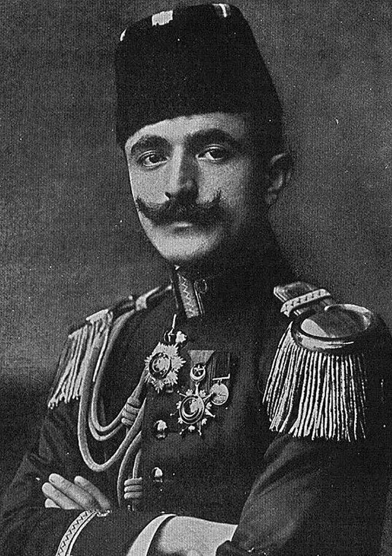

Basmachilik harakati va muhojirlik (1918–1934): Turkiston qarshiligi va Afg'onistonga ko'chish
Basmachilik — 1918-yildan 1930-yillarning boshigacha Turkiston va Buxoroda sovet hokimiyatiga qarshi olib borilgan qurolli harakat. Uning mag'lubiyati o'n minglab jangchi va tinch aholining Amudaryo ortiga, Afg'onistonga ko'chishiga sabab bo'ldi va Markaziy Osiyo muhojir jamoalarini shakllantirdi. Bu tarixiy ma'lumotnomada harakat va u keltirib chiqargan muhojirlik faqat manbalarga asoslangan, bahsli raqamlar esa aniq izoh bilan bayon etiladi.

Basmachilik harakati — 1918-yildan to 1930-yillarning o'rtalarigacha Turkiston (ayniqsa Farg'ona vodiysi) va sharqiy Buxoroda sovet-bolshevik hokimiyatiga qarshi olib borilgan qurolli qarshilik. Tarixchilar uni Markaziy Osiyoda sovet tuzumiga qarshi eng yirik harakat deb baholaydi. Quyida voqealar faqat manbalarga asoslangan faktlar bilan bayon etiladi; manbalar bir-biridan farq qiladigan o'rinlar alohida izohlanadi.
"Basmachi" atamasi
"Basmachi" so'zi turkiy "bosmoq" (hujum qilmoq, bostirib kirmoq) o'zagidan olingan bo'lib, uni rus va sovet manbalari qo'zg'olonchilarga nisbatan salbiy ma'noda — "qaroqchi, bosqinchi" sifatida ishlatgan. Qo'zg'olonchilarning o'zlari bu nomni qabul qilmagan; jangchi guruhlari "qo'rboshi" deb atalgan maydon sarkardalari boshchiligida tuzilgan edi.
Kelib chiqishi: Qo'qon Muxtoriyati, 1918-yil
Harakatning bevosita turtkisi — 1918-yil fevralda Qizil Armiya tomonidan Qo'qon shahri va qisqa umr ko'rgan Qo'qon (Turkiston) Muxtoriyatining tor-mor etilishi bo'lgani ko'pchilik manbalarda ko'rsatiladi. Qo'qonning bosib olinishi va talon-toroji Farg'ona vodiysidagi ommaviy qo'zg'olonni boshlab berdi. Qo'qon vayron qilinganda halok bo'lganlar soni ba'zi baholarga ko'ra 25 mingga yetgan deyiladi — bu raqam manbalarda keltiriladi, ammo taxminiy va bahsli hisoblanadi.

Yetakchilar
Madaminbek — Farg'onadagi eng nufuzli qo'rboshilardan biri bo'lib, 1919-yilda rus dehqon-ko'chmanchilari bilan vaqtincha ittifoq tuzgan, keyin 1920-yil mart atrofida sovet tomoniga o'tgan. Anvar Posho (Enver Pasha) — sobiq Usmonli harbiy vaziri — 1921-yil noyabrda Buxoroga kelib, bolsheviklar tarafida qo'zg'olonni bostirish o'rniga basmachilar tomoniga o'tgan va ularning oliy sarkardasiga aylangan; uning qo'l ostida bir vaqtlar 16 mingga yaqin jangchi bo'lgani keltiriladi. Anvar Posho 1922-yil 4-avgustda halok bo'lgan; halok bo'lgan joyi hozirgi Tojikiston hududida bo'lsa-da, manbalar aniq joyni turlicha (Baljuvon yoki Dushanbe yaqinida deb) ko'rsatadi.
Ibrohim Bek (Ibrohim Laqay) — sharqiy Buxorodagi laqay o'zbeklaridan chiqqan qo'rboshi — Qizil Armiya zarbalaridan so'ng 1926-yilda Afg'onistonga o'tib ketgan va bir necha yil chegara ortidan reydlar uyushtirgan. U 1931-yilda sovet hududiga qaytganda qo'lga olingan va o'sha yili (31-avgust) qatl etilgan.
Xronologiya
Harakatning ildizlari 1916-yilgi Turkiston qo'zg'oloniga borib taqaladi. 1918-yil fevralda Qo'qon Muxtoriyatining tugatilishi Farg'ona qo'zg'olonini boshlab berdi. Eng kuchli davri 1920–1922-yillarga to'g'ri keladi (Anvar Posho sarkardaligi 1921–1922). Markaziy Osiyoning aksar hududlarida harakat 1926-yilga kelib asosan so'ndi, ammo chegara ortidan sporadik qarshilik 1930-yillar boshigacha davom etdi. Oxirgi yirik janglar 1933-yil oktabrda bo'lib, harakat 1934-yilga kelib yakunlangan deb hisoblanadi.
Muhojirlik: Amudaryo ortiga ko'chish
Harakatning bostirilishi o'n minglab jangchi va tinch aholining — oilalari bilan birga — Amudaryo ortiga, Afg'onistonga qochishiga sabab bo'ldi; kichikroq oqimlar Eron va Xitoyning Sharqiy Turkiston (Shinjon) tomoniga ketdi. Shu tariqa Shimoliy Afg'onistonda Markaziy Osiyo muhojir (muhojir) jamoalari shakllandi. Tarixchi Kamoliddin Abdullaev keltirgan ma'lumotlarga ko'ra, 1925–1926-yillarga kelib Afg'onistonda Markaziy Osiyodan kelgan muhojirlar soni taxminan 479 855 kishini (shu jumladan turkman, o'zbek, tojik va qirg'izlarni) tashkil etgan; bu raqamlar sovet davri hisob-kitoblariga asoslangan taxminlardir.
Kollektivlashtirish davridagi ikkinchi to'lqin
Dastlabki eng katta ko'chish to'lqini 1920–1926-yillarda, ya'ni bolsheviklar hokimiyatiga qarshi kurash davrida bo'lib o'tgan. Keyinchalik, 1929–1932-yillardagi sovet kollektivlashtirish va "kulaklarni tugatish" siyosati yangi, ikkinchi ko'chish to'lqinini keltirib chiqardi. Abdullaev keltirgan bir hujjatli misolda 1931-yil 30-martda Chubek kechuvi orqali bir kechada minglab kishi (taxminan ming oila) sovet qirg'og'idan Afg'oniston tomonga o'tgan.
Xulosa va meros
Basmachilik harakati va uning mag'lubiyati Markaziy Osiyo tarixidagi yirik burilishlardan biri bo'ldi: u o'nlab yillar davomida Afg'oniston, Eron, Turkiya va boshqa mamlakatlarga tarqalgan o'zbek va boshqa Turkiston xalqlari muhojir jamoalarining shakllanishiga asos soldi. Bu jamoalar keyinchalik diaspora tarixining muhim qismiga aylandi.